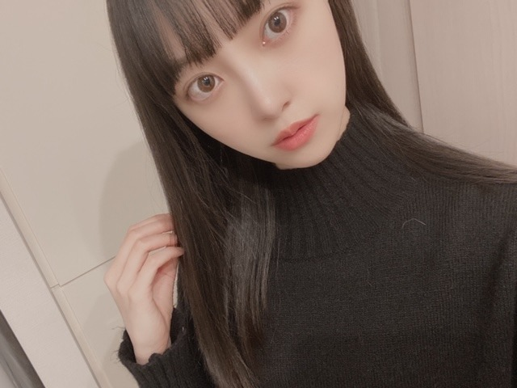
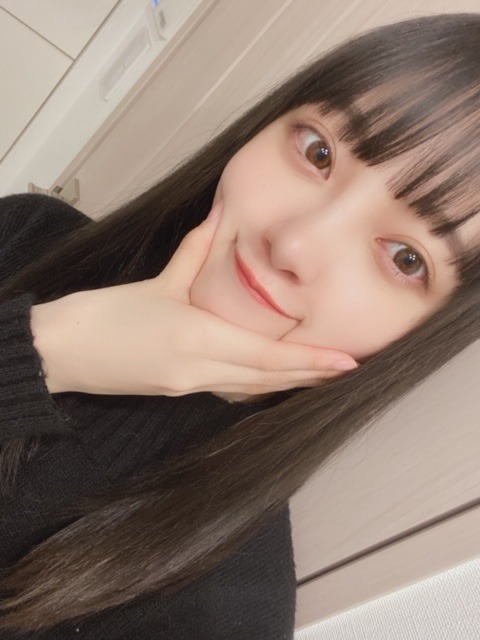
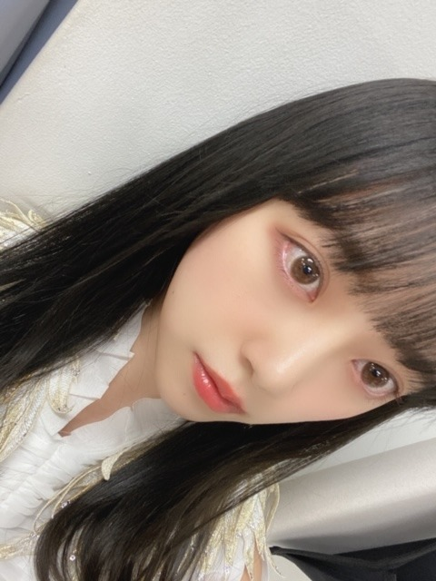
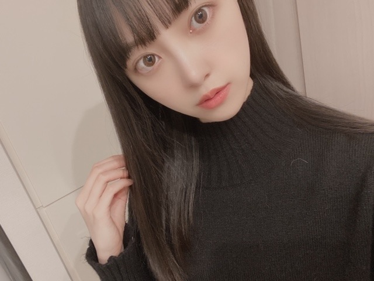
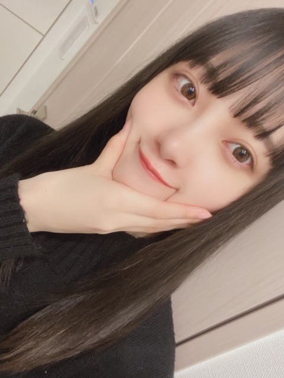
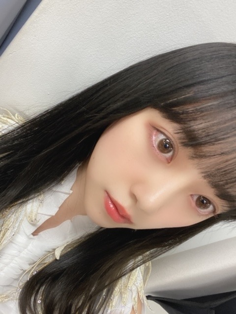

2020/0402Thu4月
こんにちは☺︎
みなさん、お元気でしょうか？
マスク手洗いうがいはもちろん
毎日体温を測り、体調に少しでも違和感がある場合は自覚症状がはっきりと無くても周りの人への配慮の1つとして病院に行くなど自分の体調にしっかりと向き合いましょう
早くいつも通りの生活に戻れる事を祈り、考え、行動していきましょう!
今日の空は雲がなくて清々しいですね~
きよきよしい、じゃなくて、すがすがしい ですよね
笑
ちゃーんとわかってますよ☺︎
もう間違えないでしょう☺︎

沢山寝たので今日は元気です
朝からブログを書いています
銀魂2を途中まで観てるから早く続きを観なきゃ
ハッピーデスデイも観なきゃ
フォロワーズも観なきゃ
あわわわ

もっちもちのほっぺ...
これは痩せなきゃですぞ...
頑張ります
あと最近気づいたのは口が小さいこと。
ちょこん。ってしてますね。富士山型です
リップを塗る範囲が狭くて悲しいです
でも唇を褒めてもらえると嬉しいです
明日はMステ3時間spです
見てください!
見つけてください!
春ですね

どこ見てるんやろ
デハ
こんにちは☺︎
みなさん、お元気でしょうか？
マスク手洗いうがいはもちろん
毎日体温を測り、体調に少しでも違和感がある場合は自覚症状がはっきりと無くても周りの人への配慮の1つとして病院に行くなど自分の体調にしっかりと向き合いましょう
早くいつも通りの生活に戻れる事を祈り、考え、行動していきましょう!
今日の空は雲がなくて清々しいですね~
きよきよしい、じゃなくて、すがすがしい ですよね
笑
ちゃーんとわかってますよ☺︎
もう間違えないでしょう☺︎

沢山寝たので今日は元気です
朝からブログを書いています
銀魂2を途中まで観てるから早く続きを観なきゃ
ハッピーデスデイも観なきゃ
フォロワーズも観なきゃ
あわわわ

もっちもちのほっぺ...
これは痩せなきゃですぞ...
頑張ります
あと最近気づいたのは口が小さいこと。
ちょこん。ってしてますね。富士山型です
リップを塗る範囲が狭くて悲しいです
でも唇を褒めてもらえると嬉しいです
明日はMステ3時間spです
見てください!
見つけてください!
春ですね

どこ見てるんやろ
デハ
2020/04/02 11:12
コメント(356)
こんばんは。ブログ更新ありがとうございます。
私は元々引きこもりなので、ウイルス感染の可能性が低いです。とはいうものの、やはり転ばぬ先の杖、手洗い、うがい、マスクは欠かせません。
清々しい、はサッカーの本田選手もきよきよしいと間違えていましたね。「清」は、すが、とは読みづらいですよね。
ではまた。
私は元々引きこもりなので、ウイルス感染の可能性が低いです。とはいうものの、やはり転ばぬ先の杖、手洗い、うがい、マスクは欠かせません。
清々しい、はサッカーの本田選手もきよきよしいと間違えていましたね。「清」は、すが、とは読みづらいですよね。
ではまた。
未央奈～～～～～～～～～～～～～～～。
清々しい「きよきよしい」って読むんじゃないんですね。勉強になりました。また、教えてください。Mステ楽しみです。未央奈は目立つから、すぐ見つかりますよ(笑)
また、更新してね。では。
追伸、太ってないよ。
清々しい「きよきよしい」って読むんじゃないんですね。勉強になりました。また、教えてください。Mステ楽しみです。未央奈は目立つから、すぐ見つかりますよ(笑)
また、更新してね。では。
追伸、太ってないよ。
こんばんは♡
今日の空は清々しいですね♪
健康管理とっても大事ですよね！
沢山睡眠とるのも大切ですよね☆
観るものが沢山でウキウキですねー!
猿に会う楽しみでウキウッキーです✨
もっちもちのほっぺ微笑ましいです！
ほんのり赤いリップも春らしいです✌
明日のMステとっても楽しみです♡☺
今日の空は清々しいですね♪
健康管理とっても大事ですよね！
沢山睡眠とるのも大切ですよね☆
観るものが沢山でウキウキですねー!
猿に会う楽しみでウキウッキーです✨
もっちもちのほっぺ微笑ましいです！
ほんのり赤いリップも春らしいです✌
明日のMステとっても楽しみです♡☺
更新ありがとう
髪型ストレートかわいい～
口小さい方がかわいいと思うよ。
未央奈ちゃんのほっぺさわってみた～い。
最後の写真キョトンとしてるところがかわいい～ね
Mステ見つけます。
髪型ストレートかわいい～
口小さい方がかわいいと思うよ。
未央奈ちゃんのほっぺさわってみた～い。
最後の写真キョトンとしてるところがかわいい～ね
Mステ見つけます。
僕はたくさん更新してくれる未央奈が好きだよ！！
ショート
ブログ更新ありがと！
もちもちの堀ちゃん可愛くて好き！笑
もちもちの堀ちゃん可愛くて好き！笑
最近イチオシになりました♪
明日のMステで未央奈を見つけるね～♪
任せて！！笑
私も日頃からやってるけど、より一層気をつけて、手洗い、うがい、マスクしてるよ！
最大限の予防して気を付けようね！
未央奈痩せてるから大丈夫だよ～(*´-`)
今日もブログ更新ありがとう♪
任せて！！笑
私も日頃からやってるけど、より一層気をつけて、手洗い、うがい、マスクしてるよ！
最大限の予防して気を付けようね！
未央奈痩せてるから大丈夫だよ～(*´-`)
今日もブログ更新ありがとう♪
未央奈ブログ更新ありがとう！
Mステ見るね〜。
755もインスタもブログもたくさん更新してくれて嬉しいよー。
ファースト写真集でも唇の話していたね！未央奈の唇、私は小さくて可愛いなぁって思うよー。春休み暇だからよく未央奈の写真集を見返しているよ。あの写真集のインタビュー前のページを美容院で見してこの髪型にして下さいって言っている(^.^)未央奈ロングも好きだけど、ボブも好きです。
ふくふくより
Mステ見るね〜。
755もインスタもブログもたくさん更新してくれて嬉しいよー。
ファースト写真集でも唇の話していたね！未央奈の唇、私は小さくて可愛いなぁって思うよー。春休み暇だからよく未央奈の写真集を見返しているよ。あの写真集のインタビュー前のページを美容院で見してこの髪型にして下さいって言っている(^.^)未央奈ロングも好きだけど、ボブも好きです。
ふくふくより
未央奈ちゃんこんにちは
初めてコメントします...♡
唇かわいいです未央奈ちゃんは全部が可愛い~
Q.未央奈ちゃんの｢原動力」は何ですか？
答えて頂けたら嬉しいです
またコメントします♕
初めてコメントします...♡
唇かわいいです未央奈ちゃんは全部が可愛い~
Q.未央奈ちゃんの｢原動力」は何ですか？
答えて頂けたら嬉しいです
またコメントします♕
その手の位地は・・・コロッケさんのモノマネする？あの方では❗ヽ(￣▽￣)ノ
未央奈ちゃんの唇は、ホント小さいですよね！
でも眼を惹く唇だと思います♪
今週は生放送の音楽番組出演がたくさんありますね！
まいやんにとっては、どれも最後の出演だと思いますから、良い思い出を作って欲しいと思います☆
でも眼を惹く唇だと思います♪
今週は生放送の音楽番組出演がたくさんありますね！
まいやんにとっては、どれも最後の出演だと思いますから、良い思い出を作って欲しいと思います☆
お疲れ様です。
レコメンから声が聴こえないとなんとなく違和感がありますね。
堀さんも体に気をつけてね。
まぁ、堀さんなら大丈夫か。しっかりしてるもん。
レコメンから声が聴こえないとなんとなく違和感がありますね。
堀さんも体に気をつけてね。
まぁ、堀さんなら大丈夫か。しっかりしてるもん。
ブログ更新ありがとう❤︎
みおなちゃんもコロナ気をつけてね！
大好き❤︎
みおなちゃんもコロナ気をつけてね！
大好き❤︎
未央奈～～～～～～～～～。
いっぱい寝て、イッバイ食べて、免疫力高めましょうね。また、更新お願いしゃーす。
いっぱい寝て、イッバイ食べて、免疫力高めましょうね。また、更新お願いしゃーす。
ブログ更新ありがとうございます(*^-゜)vThanks!
体調にはお気をつけください
体調にはお気をつけください
こんばんは。
今、会社の研修期間です。
慣れないことばかりでめちゃくちゃ疲れてるけど、ちゃんと元気です。
体温もしっかり36度台をキープしています。
逆に今病院に行っちゃうと感染リスクが高くなるから、無闇に行くのはあまりよくないって、この前携帯ショップの店員さんが言ってた。
難しい判断だけどね。
今日は清々しい天気だったね～
風はめちゃくちゃ強かったけど(笑)
でも昨日雨が強かったから、晴れると気分も一際晴れるよね～
雨も嫌いじゃないけど。
晴れと雨と曇りと雪。
バランスが大事だね。
未央奈のもちもちほっぺと口好きですよ
やば、照れる(笑)
今、会社の研修期間です。
慣れないことばかりでめちゃくちゃ疲れてるけど、ちゃんと元気です。
体温もしっかり36度台をキープしています。
逆に今病院に行っちゃうと感染リスクが高くなるから、無闇に行くのはあまりよくないって、この前携帯ショップの店員さんが言ってた。
難しい判断だけどね。
今日は清々しい天気だったね～
風はめちゃくちゃ強かったけど(笑)
でも昨日雨が強かったから、晴れると気分も一際晴れるよね～
雨も嫌いじゃないけど。
晴れと雨と曇りと雪。
バランスが大事だね。
未央奈のもちもちほっぺと口好きですよ
やば、照れる(笑)
頻繁にブログ更新してくれてありがとう！
いつも通りの日常が恋しくなる日々だけど
未央奈がブログ更新してくれることでその寂しさが紛れるよ！
本当にありがとう。
明日のMステスペシャル、自分の好きなアーティストも出演するからいつも以上に楽しみにしてるね！
いつも通りの日常が恋しくなる日々だけど
未央奈がブログ更新してくれることでその寂しさが紛れるよ！
本当にありがとう。
明日のMステスペシャル、自分の好きなアーティストも出演するからいつも以上に楽しみにしてるね！
お疲れ様です！
堀ちゃんがいつ髪染めるのか気になります笑笑
今更だけど昔に比べたらだいぶ髪長くなってるよね！
昔のショートも好きだけど今のロングも好きです！笑
毎日大変だろうけど頑張ってね！
体調にはお気をつけて‼️
堀ちゃんがいつ髪染めるのか気になります笑笑
今更だけど昔に比べたらだいぶ髪長くなってるよね！
昔のショートも好きだけど今のロングも好きです！笑
毎日大変だろうけど頑張ってね！
体調にはお気をつけて‼️
みおな、こんばんは。
４月になりました。いつもの年ほどではないですが、前月よりも電車の乗客が増えました。
とても初々しいスーツ姿が多いですね。
新社会人としての出発が、こんな時で、ちょっと可哀想ですね。
今月は旅行に行くはずでしたが、中止になりました。何処で拾ってくるか分からないですからね。秋くらいにまた行けたらいいな。
４月になりました。いつもの年ほどではないですが、前月よりも電車の乗客が増えました。
とても初々しいスーツ姿が多いですね。
新社会人としての出発が、こんな時で、ちょっと可哀想ですね。
今月は旅行に行くはずでしたが、中止になりました。何処で拾ってくるか分からないですからね。秋くらいにまた行けたらいいな。
未央奈ちゃん、ブログ更新ありがとうございまーーーーす❗ 。
未央奈ちゃんのプルプルな唇ともちもちなほっぺの写真を見て とても魅力的な感じでした♥️♥️♥️。
ブログにも掲載された通り、僕も仕事へ行く前に毎朝しっかり体温を測ったり 手洗いとうがいと消毒対策とマスクの着用と人混みから避けるなどを毎日欠かさず徹底的にやり続けています 。
3月下旬に生放送されたPremium Music 2020、CDTV ライブ！ライブ！の出演を見たおかげで少し元気を出すことができました❗ 。あと明日のMステ3時間スペシャルの放送も楽しみにしています♥️。
まだまだ油断できない状態なので僕もコロナウィルスに感染しないで毎日命を守って行動しながら頑張って仕事へ行くので、未央奈ちゃんもコロナ感染にならないように気を付けて行動してください❗ 。
未央奈ちゃんのプルプルな唇ともちもちなほっぺの写真を見て とても魅力的な感じでした♥️♥️♥️。
ブログにも掲載された通り、僕も仕事へ行く前に毎朝しっかり体温を測ったり 手洗いとうがいと消毒対策とマスクの着用と人混みから避けるなどを毎日欠かさず徹底的にやり続けています 。
3月下旬に生放送されたPremium Music 2020、CDTV ライブ！ライブ！の出演を見たおかげで少し元気を出すことができました❗ 。あと明日のMステ3時間スペシャルの放送も楽しみにしています♥️。
まだまだ油断できない状態なので僕もコロナウィルスに感染しないで毎日命を守って行動しながら頑張って仕事へ行くので、未央奈ちゃんもコロナ感染にならないように気を付けて行動してください❗ 。
質問
銀魂は何のテレビで見てる？
好きなキャラクターは(銀魂で)
ホラー大好き！
銀魂は何のテレビで見てる？
好きなキャラクターは(銀魂で)
ホラー大好き！
堀ちゃん、ブログ更新ありがとう！
堀ちゃんの写真がいっぱいで癒され、元気を貰いました！
個人的には、堀ちゃんのもちもちほっぺも唇も大好きです！
受験が終わったので、早く会いに行きたいな〜
堀ちゃんも体調には気をつけてね！
み〜おな、好き、好き、好ーき！
堀ちゃんの写真がいっぱいで癒され、元気を貰いました！
個人的には、堀ちゃんのもちもちほっぺも唇も大好きです！
受験が終わったので、早く会いに行きたいな〜
堀ちゃんも体調には気をつけてね！
み〜おな、好き、好き、好ーき！
未央奈ちゃんお疲れ様です。
もう4月ですね。春ですね〜もちほっぺの未央奈ちゃんかわいいですよ。
体調管理はしっかりと。
もう4月ですね。春ですね〜もちほっぺの未央奈ちゃんかわいいですよ。
体調管理はしっかりと。
未央奈ちゃん、ブログ更新たくさんありがとう
今は大変な時期だけど、一人一人の意識と行動で身の安全を確保しないとね。手洗いうがい、毎日やってるよ。
明日のMステ楽しみ✨
今は大変な時期だけど、一人一人の意識と行動で身の安全を確保しないとね。手洗いうがい、毎日やってるよ。
明日のMステ楽しみ✨
ブログ更新ありがとう！
未央奈ちゃんも体調には気をつけてっっ！
銀魂おもしろいよね、笑
Mステ楽しみにしてます！
未央奈ちゃんも体調には気をつけてっっ！
銀魂おもしろいよね、笑
Mステ楽しみにしてます！
未央奈ちゃんこんにちは。最近はブログの更新がより頻繁で、今未央奈ちゃんが思ってることや考えていることをたくさん知れて嬉しく思います。
こんなご時世だからあんまり嬉しがってもいられませんけどね。
未央奈ちゃんやメンバーの皆さんも健康にはいつも以上に十分に気を付けて下さい。
必ず楽しい日常が戻ってくることを信じて、僕も今は自分の出来ることをしっかりやろうと思います。
少し重たい話になるけど、未央奈ちゃんや乃木坂のメンバーや他の芸能人のように発信力のある方が注意喚起してくれるのはファンにはすごく響くしとても大切なことだと思うので、これからもぜひ続けて下さい。
明日のMステは必ずみつけますよー！
また、次のブログも楽しみにしてます。
こんなご時世だからあんまり嬉しがってもいられませんけどね。
未央奈ちゃんやメンバーの皆さんも健康にはいつも以上に十分に気を付けて下さい。
必ず楽しい日常が戻ってくることを信じて、僕も今は自分の出来ることをしっかりやろうと思います。
少し重たい話になるけど、未央奈ちゃんや乃木坂のメンバーや他の芸能人のように発信力のある方が注意喚起してくれるのはファンにはすごく響くしとても大切なことだと思うので、これからもぜひ続けて下さい。
明日のMステは必ずみつけますよー！
また、次のブログも楽しみにしてます。
普段の生活のありがたさね。
清々しい･･･
きよきよでは変換されませんね（笑）
ちゃんと早寝していると
早起きできるんですよね。
不思議です。
寝だめさせてくれません（笑）
ってなんか時間に追われてますね（笑）
ふふ。危険信号･･･。
リップの減りも少ないってことか～
明日はカメラ目線かな～～（笑）
清々しい･･･
きよきよでは変換されませんね（笑）
ちゃんと早寝していると
早起きできるんですよね。
不思議です。
寝だめさせてくれません（笑）
ってなんか時間に追われてますね（笑）
ふふ。危険信号･･･。
リップの減りも少ないってことか～
明日はカメラ目線かな～～（笑）
ブログ更新ありがとう！
体調には気をつけましょう。
これからも宜しくお願いします。
体調には気をつけましょう。
これからも宜しくお願いします。
堀ちゃん、こんばんは！
コメント遅くなっちゃいました…。
きよきよしい…笑、そういう所も可愛くて大好きです！
あと、1枚目のウインクしてる写真めちゃめちゃ可愛いです…笑
新型コロナウイルスまだまだ収束はしなさそうですね…。
1日でも早い収束を願っています！堀ちゃんも気をつけてくださいね!!
ではでは。
コメント遅くなっちゃいました…。
きよきよしい…笑、そういう所も可愛くて大好きです！
あと、1枚目のウインクしてる写真めちゃめちゃ可愛いです…笑
新型コロナウイルスまだまだ収束はしなさそうですね…。
1日でも早い収束を願っています！堀ちゃんも気をつけてくださいね!!
ではでは。
未央奈
かわいい
かわいい
ホーリーあつまれどうぶつの森どこまで進んだ??
未央奈に会える日の為に体調管理にはかなり気遣ってます！
未央奈もずっと元気でいてね。
未央奈もずっと元気でいてね。
みおな、こんばんは！更新ありがとう。 近況報告ありがとうございます。 Mステ楽しみにしてます！ では、毎日みおなに良いこと沢山ありますように！ おやすみおな！！
最後の写真、一瞬飛鳥ちゃんに見えちゃった！
（°∇°；）
（°∇°；）
未央奈！更新ありがと〜！
明日のMステ録画してみます！！
明日のMステ録画してみます！！
未央奈さん、こんばんは
お気遣い、ありがとうございます
毎日欠かさず検温しています
目に見えないだけに心配ですよね
お互いに気をつけましょ
天気も良く風がきよきよ。。。
ちがう、ちがう！
清々しくて気持ち良かったですね笑
もちもちほっぺ
可愛いからいいのにな～
ムギュの写真も見ていたいのだよ
Mステ楽しみにしています(^_^)
お気遣い、ありがとうございます
毎日欠かさず検温しています
目に見えないだけに心配ですよね
お互いに気をつけましょ
天気も良く風がきよきよ。。。
ちがう、ちがう！
清々しくて気持ち良かったですね笑
もちもちほっぺ
可愛いからいいのにな～
ムギュの写真も見ていたいのだよ
Mステ楽しみにしています(^_^)
はじめまして！
「しあわせの保護色」、悩みに悩んでアナスターシャが入ってるのを選びました！←悩んでたら買うの遅くなりました(^^;
しあわせの保護色もアナスターシャもすごく良かったです！
明日のMステ楽しみにしてます！体調に気をつけて頑張ってください✨
「しあわせの保護色」、悩みに悩んでアナスターシャが入ってるのを選びました！←悩んでたら買うの遅くなりました(^^;
しあわせの保護色もアナスターシャもすごく良かったです！
明日のMステ楽しみにしてます！体調に気をつけて頑張ってください✨
こんにちは‼︎
ブログ更新、ありがとうございます♪
世の中全般的に閉塞感が漂っていて、気持ちも塞ぎ込みがちですが、未央奈のブログを読むと元気が出ます‼︎
1日の楽しみの1つになってます。
ありがとうございます♪
黒髪ストレートに、黒のニット。
清潔感が溢れていて、とってもいい感じ♪
ほっぺたぷにぷに、いいじゃないですか‼︎
他の方々もコメントしていますが、ほっぺたぷにぷにって、悪いことじゃないと思いますよ。
自分も、優しそうな雰囲気があって、その方が好きです♪
ただ、運動不足は良くないですよね。
このような状況下で、自分も運動する機会が少なくなって、少々体重が増え気味です(苦笑)。
なんとかしなくちゃなあ。
感染リスクを避けつつ、心身ともに健康を保つ工夫も大事ですね‼︎
自分もいろいろと考えてみようと思います♪
皆さんへの注意喚起も、ありがとうございます。
未央奈のように、若い人に影響力がある人からアナウンスしてもらえると、大変助かります。
ありがとうございます♪
あと、自分が感染したらどうするか、具体的にイメージしておくことも大事ですよね。
最初は若い人はほぼ軽症だと言われていたのに、最近は若い人が重症化するケースも見られたり、重症化してからの悪化のスピードがすごい早いことが分かってきたり、日々新しい情報が入ってくるので、なかなか判断が難しいですが…
自分は今のところ、もし症状が出ても、病院に行くのはやめておこうかなあ、と思っています。
病院には基礎疾患をもっている人が沢山いるし、もし感染させちゃったら大変なことになるなあって。
陽性だとしても、自分のためにベッドを確保してもらうのも申し訳ないし。
自分も普通の風邪かもしれないのに、誰かからウイルスをもらっちゃうリスクもあるしね。
どっちにしろ特効薬もないから、誰にも会わないように部屋に閉じこもって、自力で治そうかなあって思ってます。
もちろん肺炎の症状が出てきたら、病院に連絡しようと思っているけど。
自分が重症化するリスクは多少あるけど、人に迷惑をかけないという意味では、それが一番いいんじゃないかなあって。
もちろん人によって考え方が違うし、情報が日々変わるので、これが正解かどうか分からないですけどね。
でもまずは、何か異変を感じたら、かかりつけの病院に電話するとか、相談センターに電話するとかが一番ですかね‼︎
具体的な対応をイメージしておくとともに、電話相談での内容を踏まえて臨機応変に対応することも重要かなって思います♪
さて、明日はMステ3時間スペシャルですね‼︎
めっちゃ楽しみです♪
もちろん、必ず見つけ出しますよ‼︎
ではでは、また。
明日も未央奈にとっていい1日になりますように♪
ブログ更新、ありがとうございます♪
世の中全般的に閉塞感が漂っていて、気持ちも塞ぎ込みがちですが、未央奈のブログを読むと元気が出ます‼︎
1日の楽しみの1つになってます。
ありがとうございます♪
黒髪ストレートに、黒のニット。
清潔感が溢れていて、とってもいい感じ♪
ほっぺたぷにぷに、いいじゃないですか‼︎
他の方々もコメントしていますが、ほっぺたぷにぷにって、悪いことじゃないと思いますよ。
自分も、優しそうな雰囲気があって、その方が好きです♪
ただ、運動不足は良くないですよね。
このような状況下で、自分も運動する機会が少なくなって、少々体重が増え気味です(苦笑)。
なんとかしなくちゃなあ。
感染リスクを避けつつ、心身ともに健康を保つ工夫も大事ですね‼︎
自分もいろいろと考えてみようと思います♪
皆さんへの注意喚起も、ありがとうございます。
未央奈のように、若い人に影響力がある人からアナウンスしてもらえると、大変助かります。
ありがとうございます♪
あと、自分が感染したらどうするか、具体的にイメージしておくことも大事ですよね。
最初は若い人はほぼ軽症だと言われていたのに、最近は若い人が重症化するケースも見られたり、重症化してからの悪化のスピードがすごい早いことが分かってきたり、日々新しい情報が入ってくるので、なかなか判断が難しいですが…
自分は今のところ、もし症状が出ても、病院に行くのはやめておこうかなあ、と思っています。
病院には基礎疾患をもっている人が沢山いるし、もし感染させちゃったら大変なことになるなあって。
陽性だとしても、自分のためにベッドを確保してもらうのも申し訳ないし。
自分も普通の風邪かもしれないのに、誰かからウイルスをもらっちゃうリスクもあるしね。
どっちにしろ特効薬もないから、誰にも会わないように部屋に閉じこもって、自力で治そうかなあって思ってます。
もちろん肺炎の症状が出てきたら、病院に連絡しようと思っているけど。
自分が重症化するリスクは多少あるけど、人に迷惑をかけないという意味では、それが一番いいんじゃないかなあって。
もちろん人によって考え方が違うし、情報が日々変わるので、これが正解かどうか分からないですけどね。
でもまずは、何か異変を感じたら、かかりつけの病院に電話するとか、相談センターに電話するとかが一番ですかね‼︎
具体的な対応をイメージしておくとともに、電話相談での内容を踏まえて臨機応変に対応することも重要かなって思います♪
さて、明日はMステ3時間スペシャルですね‼︎
めっちゃ楽しみです♪
もちろん、必ず見つけ出しますよ‼︎
ではでは、また。
明日も未央奈にとっていい1日になりますように♪
Ｍステ、楽しみです。
未央奈さん、ブログ更新を日を置かずにしてくれるのは、ファンとしては嬉しいですよ。☺️
思われる事のお話と、自撮りの写真を見られるので、お話する内容を考えるのは大変だと思いますが、これからも頑張って更新お願いしますね。
(^_^)
CRYSTALより。
思われる事のお話と、自撮りの写真を見られるので、お話する内容を考えるのは大変だと思いますが、これからも頑張って更新お願いしますね。
(^_^)
CRYSTALより。
堀ちゃんのほっぺた好きです
ぜんぜん痩せなくて大丈夫だと思いますよ！
今のままできれいですよ～
ぜんぜん痩せなくて大丈夫だと思いますよ！
今のままできれいですよ～
Mステみる！
未央奈ちゃんブログ更新ありがとう！
明日のMステ楽しみにしてます！
明日のMステ楽しみにしてます！
あらためて、堀さんは黒髪が本当に良く似合いますね！
堀ちゃんこんばんは！
自覚症状がなくても周りの人への配慮、いま1番大事なことですね！
世の中の誰からでも感染してしまうかもしれないと考えて、自分のためにも家族のためにも予防する行動
例えいま元気でも自分がウィルスを持っているかもしれないと思って、少しでも誰にもうつさない行動
この2つの、かもしれない行動が今できることですね(^^)
あとは、やることはやったと開き直って神頼み、身体と心の健康を大事にしていきしょう( ´ ▽ ` )
ブログの更新たくさんでめっちゃ嬉しいです！
更新頻度高くて心配されちゃうのも変な話ですよね(^^;)
テレビと違って、自然と目にするものではないので、一般的にはブログは優先順位が下がりがちだから、目立つのかもしれませんね、もちろん良い意味の目立ちですけど( ´ ー ` )
僕ももしアイドルだったらたくさんブログ更新すると思うなぁ、もしもの話です( ´ ▽ ` )笑
たしかに堀ちゃんは他の人よりブログの更新を頻繁にしてくれますが、全く変ではないです、そもそもブログの更新頻度の普通とは？とも思いますし(^^)笑
なおかつ普通でもないと思います、素晴らしいところです(o^^o)♩
努力をする人は一流、努力を努力と思わず実践できる人は超一流、という言葉を聞いたことがあります、堀ちゃんのモバメを見てこの言葉を思い出しました( ´ ▽ ` )
ブログは時間の制限もなく個人のステージで、見たい人が見るコンテンツなので、より素に近い堀ちゃんを知られると思ってます(^^)
距離感が近いというよりも、向かって話しかけてる相手が限られている、というイメージです、特別感を勝手に感じてます( ´ ▽ ` )笑
だから僕はブログを更新してくれるのがめちゃくちゃ嬉しくて、いつも楽しみにしています(o^^o)
何より堀ちゃんの書く文章が好きです(^^)
「リップを塗る範囲が狭くて悲しいです
でも唇を褒めてもらえると嬉しいです」
今回もこの表現、何気ないですがなんだかめっちゃ好きです(o^^o)♩
ブログを更新する時間がとれないときももちろんあると思います、これからも堀ちゃんの好きなように、その時の好きなペースで更新してくれると嬉しいです、いつでも楽しみに待ってます(o^^o)♩
デハ！明日のMステSPも楽しみにしています！(o^^o)
またコメントさせてくださいー！
自覚症状がなくても周りの人への配慮、いま1番大事なことですね！
世の中の誰からでも感染してしまうかもしれないと考えて、自分のためにも家族のためにも予防する行動
例えいま元気でも自分がウィルスを持っているかもしれないと思って、少しでも誰にもうつさない行動
この2つの、かもしれない行動が今できることですね(^^)
あとは、やることはやったと開き直って神頼み、身体と心の健康を大事にしていきしょう( ´ ▽ ` )
ブログの更新たくさんでめっちゃ嬉しいです！
更新頻度高くて心配されちゃうのも変な話ですよね(^^;)
テレビと違って、自然と目にするものではないので、一般的にはブログは優先順位が下がりがちだから、目立つのかもしれませんね、もちろん良い意味の目立ちですけど( ´ ー ` )
僕ももしアイドルだったらたくさんブログ更新すると思うなぁ、もしもの話です( ´ ▽ ` )笑
たしかに堀ちゃんは他の人よりブログの更新を頻繁にしてくれますが、全く変ではないです、そもそもブログの更新頻度の普通とは？とも思いますし(^^)笑
なおかつ普通でもないと思います、素晴らしいところです(o^^o)♩
努力をする人は一流、努力を努力と思わず実践できる人は超一流、という言葉を聞いたことがあります、堀ちゃんのモバメを見てこの言葉を思い出しました( ´ ▽ ` )
ブログは時間の制限もなく個人のステージで、見たい人が見るコンテンツなので、より素に近い堀ちゃんを知られると思ってます(^^)
距離感が近いというよりも、向かって話しかけてる相手が限られている、というイメージです、特別感を勝手に感じてます( ´ ▽ ` )笑
だから僕はブログを更新してくれるのがめちゃくちゃ嬉しくて、いつも楽しみにしています(o^^o)
何より堀ちゃんの書く文章が好きです(^^)
「リップを塗る範囲が狭くて悲しいです
でも唇を褒めてもらえると嬉しいです」
今回もこの表現、何気ないですがなんだかめっちゃ好きです(o^^o)♩
ブログを更新する時間がとれないときももちろんあると思います、これからも堀ちゃんの好きなように、その時の好きなペースで更新してくれると嬉しいです、いつでも楽しみに待ってます(o^^o)♩
デハ！明日のMステSPも楽しみにしています！(o^^o)
またコメントさせてくださいー！
未央奈～ こんにちは
ブログ更新ありがとうございます。
前回一日に二通もあって、新しい方へコメントしたはずだったのですが、間違えて古い方に送ってしまいました。ゴメンナサイ。
さて、早いもので今年も４月になりました。桜の便りも届けられ、春満開と言ったところでしょう。
新年度になりましたが、４月からも和露市区お願いしますね。
昨日の「レコメン」、聞きましたよ。未央奈がいないさびしさとともに、のりさんに笑わせられ大声で笑っているまゆたんの放送聞きながら、安心しました。ちゃんと未央奈の笑顔が受け継がれている。大丈夫だと。
先輩として、まゆたんへのアドバイスや温かい一言、よろしくお願いしますね。
あっ、そうそう「沼にハマって～」の再放送、見ましたよ。
ブログ更新ありがとうございます。
前回一日に二通もあって、新しい方へコメントしたはずだったのですが、間違えて古い方に送ってしまいました。ゴメンナサイ。
さて、早いもので今年も４月になりました。桜の便りも届けられ、春満開と言ったところでしょう。
新年度になりましたが、４月からも和露市区お願いしますね。
昨日の「レコメン」、聞きましたよ。未央奈がいないさびしさとともに、のりさんに笑わせられ大声で笑っているまゆたんの放送聞きながら、安心しました。ちゃんと未央奈の笑顔が受け継がれている。大丈夫だと。
先輩として、まゆたんへのアドバイスや温かい一言、よろしくお願いしますね。
あっ、そうそう「沼にハマって～」の再放送、見ましたよ。
未央奈ちゃん、こんばんは(^o^)/
顔(ほっぺた)はちょっとふっくらしてるくらいの方が可愛いよ( ＾∀＾)
俺も男なのに口が小さくて富士山型のアヒル口です(^_^;)
女の子はでっかいタラコ唇よりはちっちゃい方が良いですよ( ＾∀＾)
顔(ほっぺた)はちょっとふっくらしてるくらいの方が可愛いよ( ＾∀＾)
俺も男なのに口が小さくて富士山型のアヒル口です(^_^;)
女の子はでっかいタラコ唇よりはちっちゃい方が良いですよ( ＾∀＾)


ブログぜんぜん多すぎないからね、ほんと嬉しいよ〜
この調子で続けてください。
コロナ対策してますよ、早く安全に握手会が開催されるの願ってます。
早く堀ちゃんに会いたいです！
いつも言ってるけど、ほっぺたぜんぜんプニプニじゃないよ〜
痩せなくていいよ〜。
口も大きすぎず小さすぎずベストだと思うけどな？
堀ちゃんは完璧なんですよ、欠点なんてないですよ。
とにかく可愛いよ〜！
明日Mステ見るよ、髪型楽しみです。
デハ？（笑）